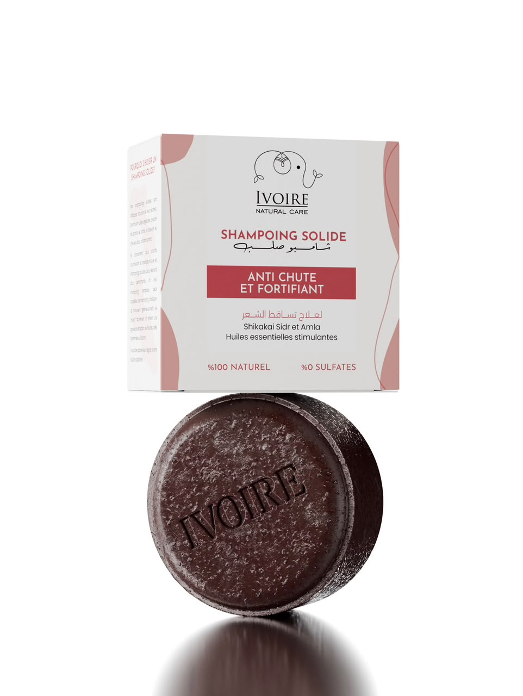

Shikakai
Réputé pour nettoyer en douceur et apporter de la vitalité aux cheveux.
SOIN CAPILLAIRE NATUREL
La force de la nature réunie dans un shampoing solide. Un geste simple, une routine plus douce, des cheveux qui retrouvent toute leur place.

01 / LE POINT DE DÉPART
Cheveux fragiles, routine qui ne vous ressemble plus ? Ivoire apporte la simplicité d’un soin solide inspiré des ingrédients naturels. Une invitation à prendre soin de votre cuir chevelu et à retrouver le plaisir de votre routine.
Découvrir la formule ↗Un rituel conçu pour accompagner les cheveux fragilisés.
Une mousse douce et un nettoyage tout en délicatesse.
Des cheveux plus souples, prêts à rayonner au quotidien.
02 / LA FORMULE
Trois ingrédients traditionnels au cœur d’une routine capillaire plus consciente.
Je découvre mon rituel ↗Réputé pour nettoyer en douceur et apporter de la vitalité aux cheveux.
Un ingrédient végétal apprécié pour la douceur qu’il apporte au cuir chevelu.
Une baie emblématique des rituels capillaires, associée à la brillance.
03 / LE GESTE
Une routine facile à adopter, aussi agréable à vivre qu’à regarder.
Mouillez vos cheveux et le shampoing solide.
Frottez délicatement entre les mains ou sur le cuir chevelu.
Massez, rincez et profitez de votre nouvelle routine.
04 / VOTRE NOUVELLE ROUTINE
Le shampoing solide Ivoire vous accompagne vers un rituel capillaire plus simple.
Paiement à la livraison · الدفع عند الاستلام
BON À SAVOIR
Mouillez vos cheveux et le shampoing. Faites mousser entre les mains ou sur le cuir chevelu, massez doucement puis rincez.
Le produit met en avant le shikakai, le sidr et l’amla. Consultez l’emballage pour la composition complète et les précautions d’emploi.
L’emballage fourni indique « 0% sulfates ».
Vous pouvez choisir un point de retrait ou une livraison à domicile. Les frais et la disponibilité seront confirmés avant validation de la commande.